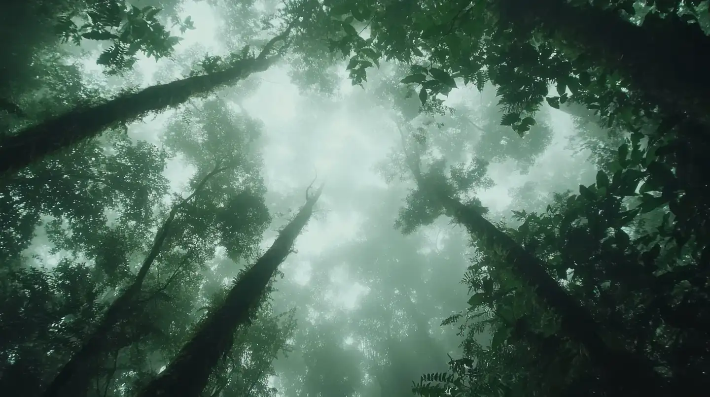

Case study Ethanol manufacturing
Empowering ethanol manufacturing for a low-carbon future
Client Union Chemical and Equipment Co., Ltd. (UC&E)
Supply-chain requirement
The challenge
As a major exporter to Europe and the United States, UC&E faced growing pressure from consumers, employees and investors to disclose its carbon footprint.
As part of its clients' supply chains, it also had to report emissions and a reduction plan to meet new green procurement standards.
- 01Europe
- 02United States
- 03Consumers
- 04Employees
- 05Investors
How we did it
Our solution
LO-CARB measured UC&E's direct and indirect emissions with CarbonCal, identified key emission sources and hotspots, and built an emissions dashboard by scope. We also recommended product-level carbon footprint information so UC&E's clients could use it in their own sustainability work.
Space for the UC&E emissions dashboard by scope (screenshot to be supplied)
With this data, UC&E was able to target specific areas for emission reduction, positioning the company to capture a larger share of the growing low-carbon products market.
- 01Measure Direct and indirect emissions
- 02Identify Key sources and hotspots
- 03Visualise Emissions dashboard by scope
- 04Advise Product-level carbon footprint
Business outcomes
- 01Met green procurement requirements of clients in Europe and the United States
Solutions used
- 01Platform CarbonCal Carbon management platform used to measure emissions and build the dashboard by scope. View solution
- 02Service Carbon Footprint for Organization (CFO) Organization-level greenhouse gas inventory. View solution
- 03Advisory Carbon Footprint for Product (CFP) Advisory Advice on product-level carbon footprint information. Advisory only, not a CFP certification. View solution
Portfolio
More case studies
- 01TAT Tourism Authority of Thailand (TAT) Case study in preparation
- 02TPC Thailand Privilege Card (TPC) Case study in preparation
- 03RAOT Rubber Authority of Thailand (RAOT) Case study in preparation
Talk to us about a project like these
Tell us your goal and we will point you to the right solution.
กรณีศึกษา อุตสาหกรรมผลิตเอทานอล
ยกระดับการผลิตเอทานอลสู่อนาคตคาร์บอนต่ำ
ลูกค้า บริษัท ยูเนี่ยนเคมีคอล แอนด์ อีควิปเม้นท์ จำกัด (UC&E)
ข้อกำหนดในห่วงโซ่อุปทาน
ความท้าทาย
ในฐานะผู้ส่งออกรายใหญ่ไปยังยุโรปและสหรัฐอเมริกา UC&E เผชิญแรงกดดันจากผู้บริโภค พนักงาน และนักลงทุน ให้เปิดเผยคาร์บอนฟุตพรินต์
และในฐานะส่วนหนึ่งของห่วงโซ่อุปทานของลูกค้า ยังต้องรายงานการปล่อยก๊าซและแผนลดการปล่อย เพื่อให้ผ่านเกณฑ์ green procurement ใหม่
- 01ยุโรป
- 02สหรัฐอเมริกา
- 03ผู้บริโภค
- 04พนักงาน
- 05นักลงทุน
ขั้นตอนการทำงาน
แนวทางของเรา
โล-คาร์บวัดการปล่อยก๊าซทั้งทางตรงและทางอ้อมของ UC&E ด้วย CarbonCal ระบุแหล่งปล่อยหลักและ hotspot และจัดทำ dashboard แยกตาม scope พร้อมแนะนำให้จัดทำคาร์บอนฟุตพรินต์ระดับผลิตภัณฑ์ เพื่อให้ลูกค้าของ UC&E นำไปใช้ต่อในงานด้านความยั่งยืนของตนเอง
พื้นที่สำหรับภาพ Dashboard การปล่อยแยกตาม Scope ของ UC&E (รอไฟล์จริง)
ด้วยข้อมูลนี้ UC&E จึงกำหนดเป้าหมายลดการปล่อยในส่วนที่สำคัญได้ตรงจุด และพร้อมคว้าส่วนแบ่งที่ใหญ่ขึ้นในตลาดสินค้าคาร์บอนต่ำที่กำลังเติบโต
- 01วัดการปล่อย ทั้งทางตรงและทางอ้อม
- 02ระบุจุดสำคัญ แหล่งปล่อยหลักและ hotspot
- 03แสดงผล Dashboard แยกตาม scope
- 04ให้คำแนะนำ คาร์บอนฟุตพรินต์ระดับผลิตภัณฑ์
ผลลัพธ์ทางธุรกิจ
- 01ผ่านเกณฑ์ green procurement ของลูกค้าในยุโรปและสหรัฐอเมริกา
โซลูชันที่ใช้
- 01แพลตฟอร์ม CarbonCal แพลตฟอร์มบริหารจัดการคาร์บอนที่ใช้วัดการปล่อยและสร้าง dashboard แยกตาม scope ดูโซลูชัน
- 02บริการ คาร์บอนฟุตพรินต์องค์กร (CFO) การจัดทำบัญชีก๊าซเรือนกระจกระดับองค์กร ดูโซลูชัน
- 03ให้คำแนะนำ ที่ปรึกษาคาร์บอนฟุตพรินต์ผลิตภัณฑ์ (CFP) คำแนะนำด้านคาร์บอนฟุตพรินต์ระดับผลิตภัณฑ์ เป็นบริการให้คำแนะนำ ไม่ใช่การรับรอง CFP ดูโซลูชัน
ผลงาน
กรณีศึกษาอื่น
- 01TAT การท่องเที่ยวแห่งประเทศไทย (ททท.) กำลังจัดทำกรณีศึกษา
- 02TPC ไทยแลนด์ พริวิเลจ คาร์ด (TPC) กำลังจัดทำกรณีศึกษา
- 03RAOT การยางแห่งประเทศไทย (กยท.) กำลังจัดทำกรณีศึกษา
คุยกับเราเรื่องโปรเจกต์ แบบนี้
บอกเป้าหมายของคุณ แล้วเราจะแนะนำโซลูชันที่เหมาะสม